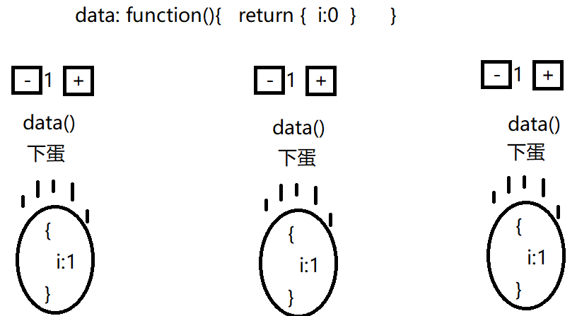
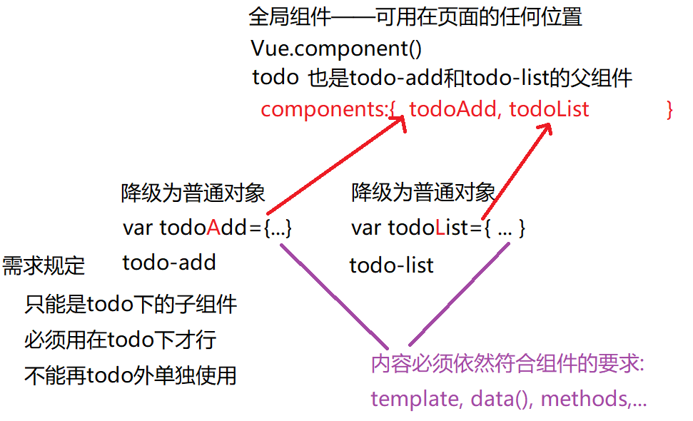
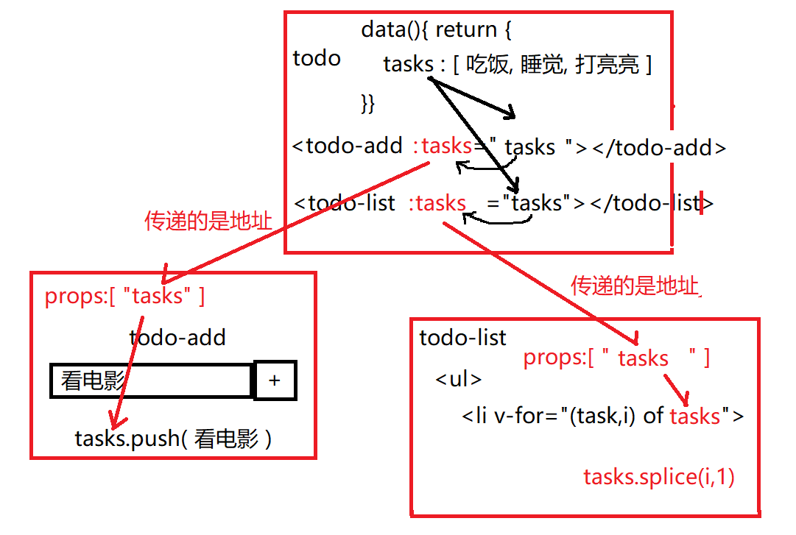
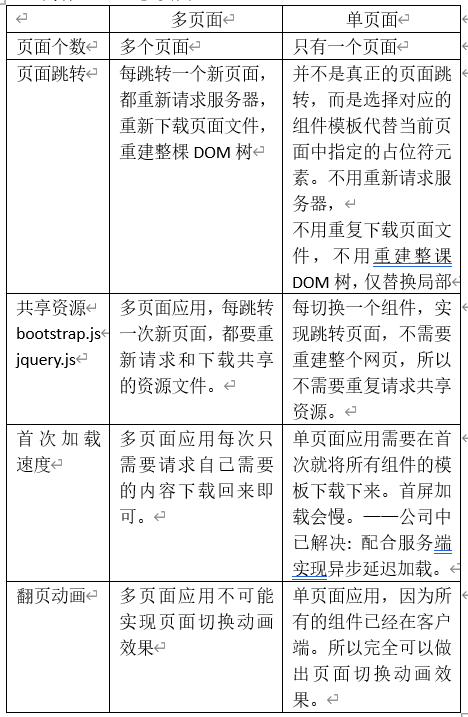
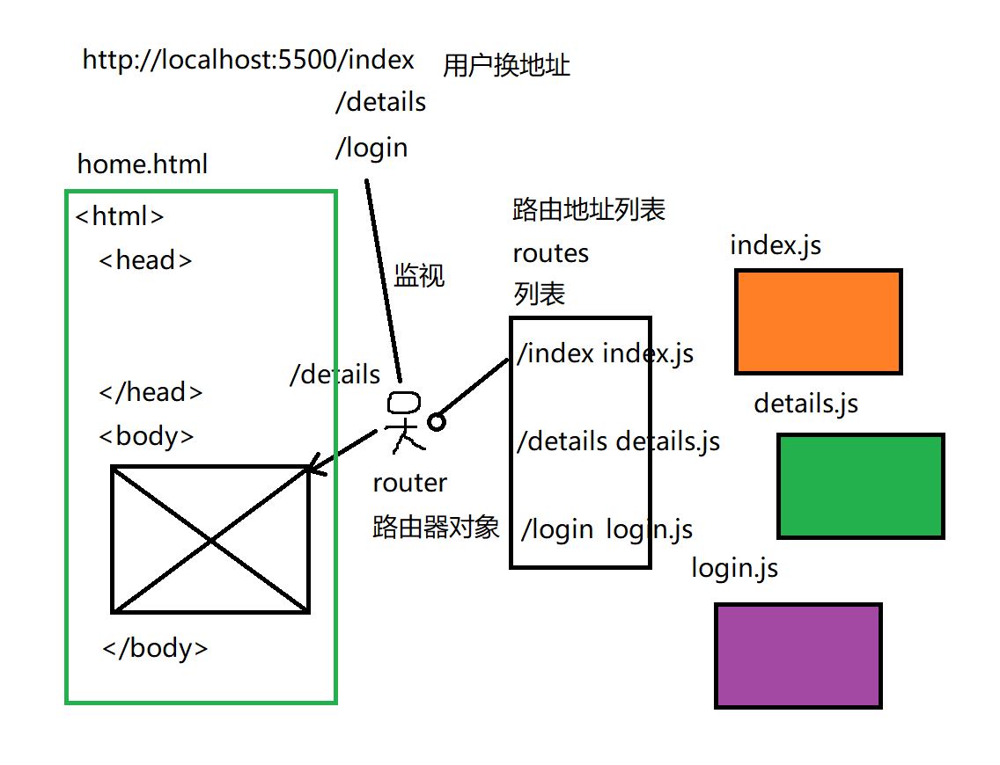
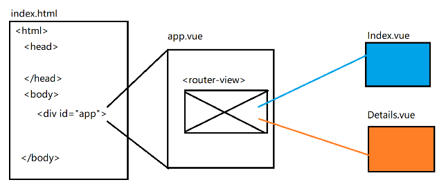

正课
1. 组件:
什么是: 拥有专属的HTML,CSS,JS和数据的页面独立区域
为什么: 重用！
何时: 只要发现页面中有一个区域可能被反复使用，都要定义成组件。
如何:
1. 创建: Vue中的组件其实是一个包含html,数据和功能的对象
每个组件都是一个缩微的new Vue()
new Vue()中有什么组件中就有什么
Vue.component("组件名",{
el:"选择器", --------这行被划横线了
template: //将来会反复复制多个和这里一模一样的html片段，所以将这一份标准的的片段称为模板
` < div > //组件模板必须用唯一的父元素包裹
< button >-< /button > < span >1< /span > < button >+< /button >
< /div >`,
data:{ ... }, --------这行被划横线了
data:function(){ // --------这行被划横线了
return {
//模型变量
}
},
methods:{ ... }, //同new Vue()
created(){ ... }, //同new Vue()
watch:{ ... }, //同new Vue()
computed:{ ... }, //同new Vue()
mounted(){ ... } //同new Vue()
})
为什么: data必须是function:

2. 使用组件: 组件在html中其实就是一个可重用的标签而已。组件名就是标签名。所以组件名起名不要用驼峰命名！因为HTML标签不区分大小写。可用-分隔多个单词
new Vue()要不要写？答：必须写！
因为是全靠new Vue()扫描页面时，发现不认识的标签，才会去加载自定义的组件。
加载时: 会用组件的template中的HTML模板片段，代替不认识的标签
2. 组件化开发:
什么是: 将所有要做的HTML页面，切割为多个独立的组件，可以分工协作开发。
为什么: 1. 分工协作；2. 松耦合
何时: 今后做页面，都是先将页面划分成多个组件，再分别开发每个组件。
如何:
1. 将页面划分成多个功能区域-组件
2. 创建组件.js，其中定义组件对象：2种:
1. 全局组件: Vue.component()
什么是: 可以在页面任何位置使用的组件
何时: 只要页面中一个区域，可能在多个页面或者多个不同位置随意使用时
问题: 不受约束，随处可用
2. 子组件:
什么是: 必须在指定父组件内才能使用的组件
何时: 如果希望限制一个组件只能在其父组件内使用时，就必须定义子组件
如何:
1. 创建子组件:
var 组件对象名={ 和组件标准写法必须一致 }
强调:
1. {}中必须和Vue.component()中的{}内容格式一致！。
2. 变量名必须用驼峰命名
2. 在父组件中用components属性包裹所有子组件:
Vue.component("父组件",{
template:
data:
methods:
...
components:{ 子组件对象名,... }
})
3. 在主界面或父组件中，使用子组件标签，引入子组件的内容
结果: 浏览时，所有组件(父和子)，最终都合并为一个整体。不再包含不认识的标签。

问题: 父组件中的公共数据，子组件可以直接使用吗？
答: 不行！因为每个组件都是专属的独立的数据。互相之间没有关系。即使是在位置上是父子关系的组件之间，也没有数据的关系。
问题：如何让子组件使用父组件中的公共数据:
答: 父组件可以将自己的模型变量赋值给子组件的属性
2 步
1. 子组件定义自定义属性，准备接受父组件的数据
var 子组件={
template:
data(){ return { } },
props:[ "自定义属性名" , "自定义属性名"],
methods:{ ... },
...
}
结果: 当前组件将来变成标签时，在开始标签中就多了一个同名的自定义属性。只不过暂时没有值
< 子组件 自定义属性=""
2. 父组件中使用子组件标签的位置，开始标签中通过:绑定的方式，将自己data中的值赋值给子组件自定义的属性
< 子组件 :自定义属性="父组件的变量"
结果子组件对象内的自定义属性，就获得了父组件变量的值。
强调: props中的自定义属性等效于data中的模型变量。也可以在子组件内绑定使用。
强调: 子组件中可以修改父组件传来的数据。如果传来的是引用类型的对象: 数组或对象，则在子元素中修改变量等效于直接修改父元素中的原对象或数组。因为父子组件间传递引用类型的对象，实际传递的都是地址值。

3. SPA: Single Page Application
单 页面 应用
什么是: 整个应用程序只有一个完整的页面
为什么: vs 多页面

何时: 今后，基本上都是单页面应用。
如何:
1. 先有一个完整的home.html文件
home.html中主体部分被用特殊标签占位，暂时为空
2. 再为每个"页面"，定义组件对象
比如: index.js details.js products.js login.js
3. 创建路由地址列表
什么是: 保存每个路由地址和组件对象对应关系的列表
如何:
var routes=[
{ path:"/index", component: index },
{ path:"/details", component: details },
{ path:"/login", component: login },
]
4. 创建一个路由器对象：
什么是: 专门监视地址栏中的变化，根据变化，在路由字典中查找对应的组件，用组件替换页面中占位符的位置。实现页面切换。

4. 脚手架:
什么是: 已经具备核心功能的半成品项目 为什么: 标准化项目的开发，便于分工协作。 何时: 今后只要使用Vue框架做开发，都要先创建Vue框架的脚手架项目代码。 如何: 2步: 1. 先安装一个能创建脚手架项目的命令行工具: npm i -g @vue/cli 2. 用vue命令，创建一个项目的脚手架代码文件夹 vue create 项目文件夹名 第一步: Your connection to the default npm registry seems to be slow. Use https://registry.npm.taobao.org for faster installation? (Y/n) Y 第二步: ? Please pick a preset: (Use arrow keys) > default (babel, eslint) > Manually select features //选下边一个 第三步: ? Check the features needed for your project: (Pressto select, to toggle all, to invert selection) >(*) Babel //必选: 翻译 脚手架代码中采用了模块化开发： 抛出模块: module.exports={ ... } nodejs中 ES6: export default { ... } 引入模块: var 变量=require("路径") nodejs ES6: import 变量 from "路径" 因为不是所有浏览器都认识ES6，所以，需要Babel最后将所有ES6的代码翻译为多数浏览器都认识的ES5代码。 ( ) TypeScript //微软出的严格的script——不选 ( ) Progressive Web App (PWA) Support (*) Router //必选 (*) Vuex //Vue中的状态机制。当多个组件需要共用一些数据：比如当前登录用的用户名。这个公共的数据就要放在Vuex中——下个阶段老师将 ( ) CSS Pre-processors () Linter / Formatter //千万不要选！是代码质量检查工具。即使代码没错，格式不规范，也报错！ ( ) Unit Testing ( ) E2E Testing 第四步: Use history mode for router? (Requires proper server setup for index fallback in production) (Y/n) n 因为必须要服务端支持，所以才不选。 默认Vue的地址栏中都是用#/路径来跳转 但是#可能和你的锚点地址冲突。 如果即想用vue，又想要锚点地址，只能启用history模式。启用后，地址栏中就没有#了。而是直接用"/路径"。 第五步: Where do you prefer placing config for Babel, PostCSS, ESLint, etc.? (Use arrow keys) > In dedicated config files >In package.json //将所有的配置都放在一个package.json中。 第六步: Save this as a preset for future projects? (y/N) N 不把这次的项目配置保存为今后项目的模板。 脚手架文件夹创建成功后: Successfully created project xz_vue. 👉 Get started with the following commands: $ cd xz_vue //先进入项目文件夹（vue create后的那个文件夹——xz_vue） $ npm run serve //=运行Live server+Babel的效果。是先将脚手架中浏览器不懂的代码，翻译为浏览器能懂的代码。然后，再将翻译后的页面运行在一个临时的开发服务器中。 强调: npm run serve 必须在项目文件夹内运行 保险起见是在vs code中打开xz_vue，然后在package.json文件上右键单击在命令行打开，然后运行: npm run serve 没有r结尾 2件事: 1. 启动开发服务器: http://localhost:8080/ 2. 编译项目代码为浏览器认识的: Compile 强调: 1. 不用总是npm run serve，因为npm run serve可以自动感知代码的修改，并自动重新编译，重新运行。 2. 服务端nodejs的cors: 要改为http://localhost:8080/。如果不想总是改。可改为cors:*。允许所有客户端都能跨域。 分析脚手架文件夹的结构： public/ 将来所有不需要编译，就可直接使用的js和css，以及图片都放在public下。放在public下的文件，都不会被再次编译。比如: imgs文件夹，唯一的完整的首页index.html，bootstrap.css，jquery-3.2.1.js, bootstrap.js 放在public下的不需要编译的css和js，都要在唯一完整的页面index.html中引入。 src/ 放的是所有自己写的代码 /assets 放自己编写的公共的css和js /components 放全局组件或多个页面共用的子组件。比如: 页头组件，页脚组件，广告轮播组件... /views 放所有的页面组件，有几个页面，就在views下创建几个组件文件。比如: 首页，详情页，商品列表页，登录页 app.vue 整个网站所有页面公共的容器组件  main.js 相当于以前的new Vue()。整个网站只有一个new Vue()。且main.js还承担了配置Vue项目的责任 比如: axios: 1. 用npm i -save axios 为脚手架项目添加axios模块。 2. 希望在Vue框架中所有组件里都能用axios。所以，应该讲axios添加到Vue整个类型的原型对象中。 2步: main.js 1. 用import语法引入axios模块 import axios from "axios" 2. 将axios对象强行添加到Vue的原型对象中: Vue.prototype.axios=axios; 结果: 所有组件中都可用this.axios.get()发送ajax请求。 router.js 是整个网站的路由器和路由字典，保存着所有路径和组件的对应关系。 .vue文件: 是脚手架专用的组件/页面文件。 今后，只要新建一个组件，或新建一个页面，都新建.vue文件 内容包括: 3大部分: 1. 模板片段: < template >< /template >中 要求: 唯一父元素包裹 2. 组件的css: < style scoped >< style > 3. 组件的js代码: < script > //组件本质就是一个对象，对象需要抛出到外部被别人使用 export default { //没有template和el了 data(){ return { } }, created(){ }, methods:{ }, computed:{ }, watch:{ } } < /script > 路由跳转: Vue中不能用a跳转: 应该用< router-link to="/路径" >< /router-link > 在运行时被翻译为: < a href="#/路径" >